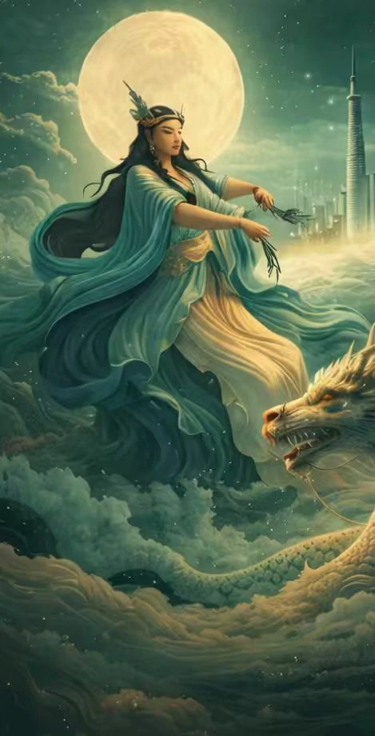
Digital Culture
When Millennial Culture Meets the Digital Age
Culture is never static. It passes through every stitch, is reinterpreted with every telling.
Today, we open the gates of the Tang Dynasty anew — through a digital lens.
AI × Tang
Cultural Heritage in the Digital Age
AI is more than technology. When it encounters a thousand years of culture,
what emerges is not just data — but new understanding, new stories, new possibilities.


When the algorithms of artificial intelligence collide with the codes of Tang Dynasty aesthetics, the stitches, patterns, vessels, and verses of a millennium past begin to breathe again in the digital realm.
This is not mere replication or restoration. Every generation is a fresh interpretation of culture; every frame is a dialogue between past and present. AI learns the aesthetic logic of the Tang from vast archives, then retells — in its own way — the stories buried by time.
Here, technology is no longer a cold instrument. It is a bridge connecting the past and the future — a medium through which a dormant cultural heritage finds its voice in the contemporary world.
Timeline
Tang Dynasty Timeline
From Early Tang to Late Tang — 289 years, four eras, eight defining moments.
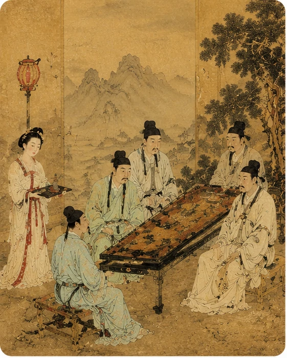
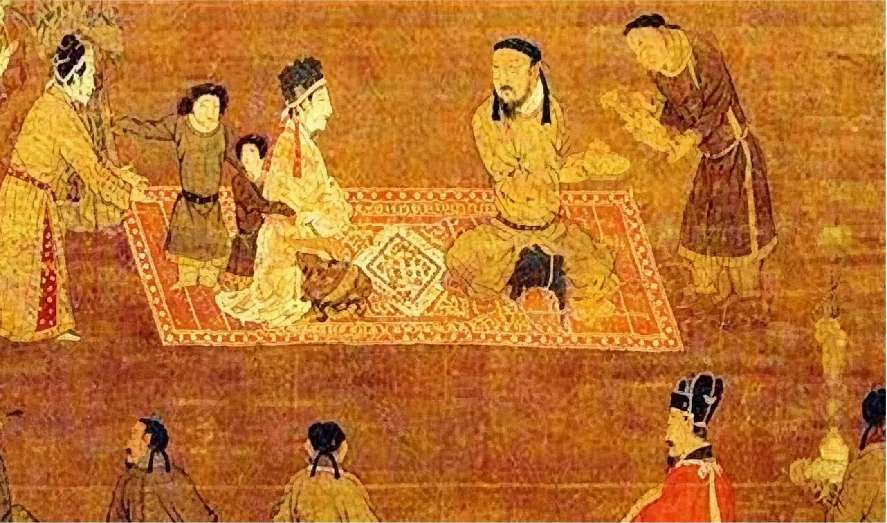
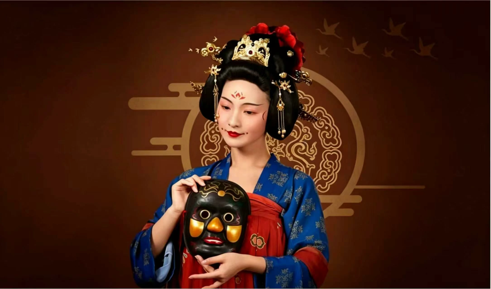

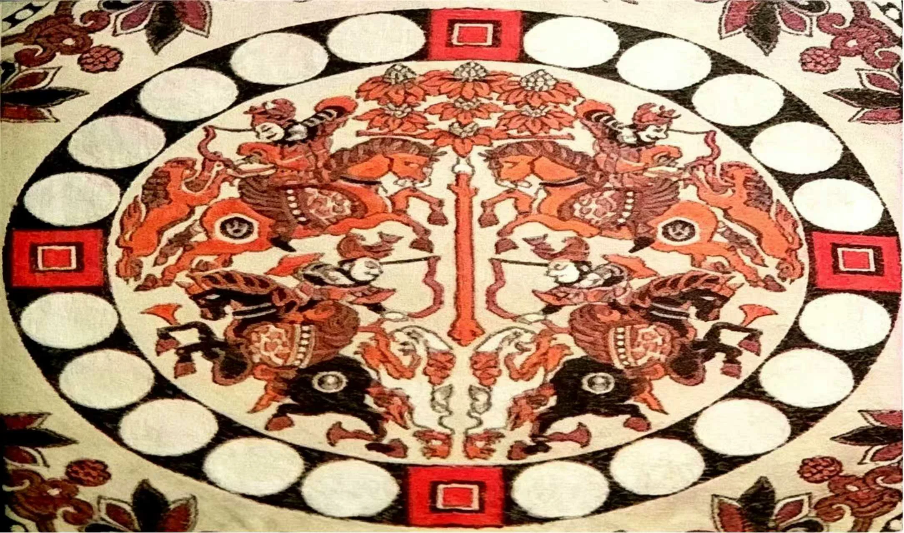
Crafts
Traditional Handicrafts
Every stitch, every thread, every wisp of incense — a fabric woven by time itself.
Embroidery
Silk & Needle Art

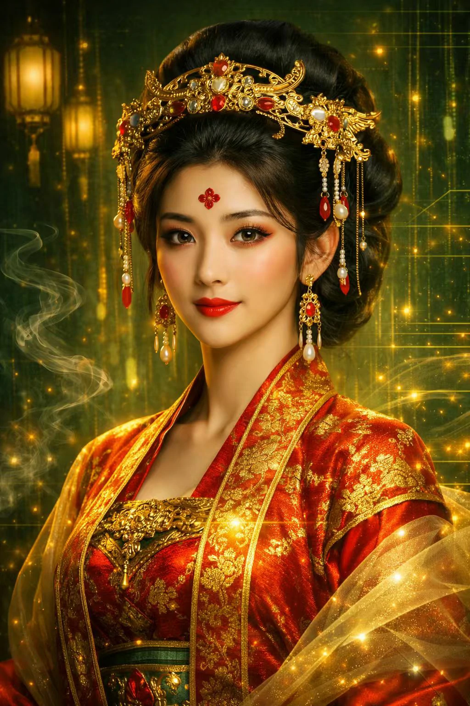
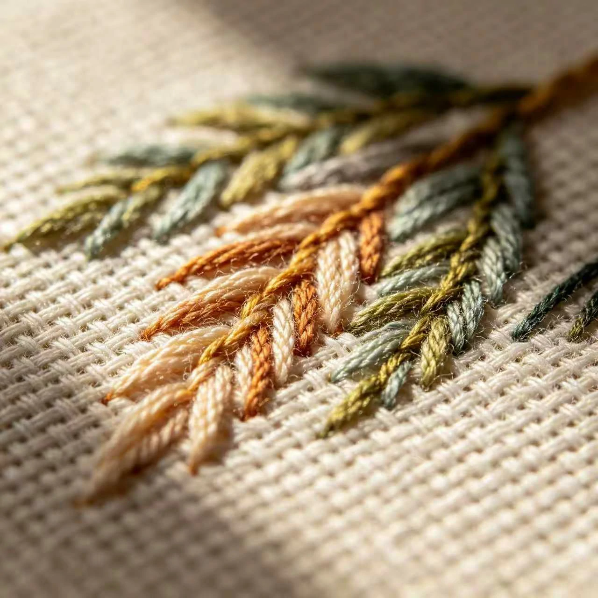

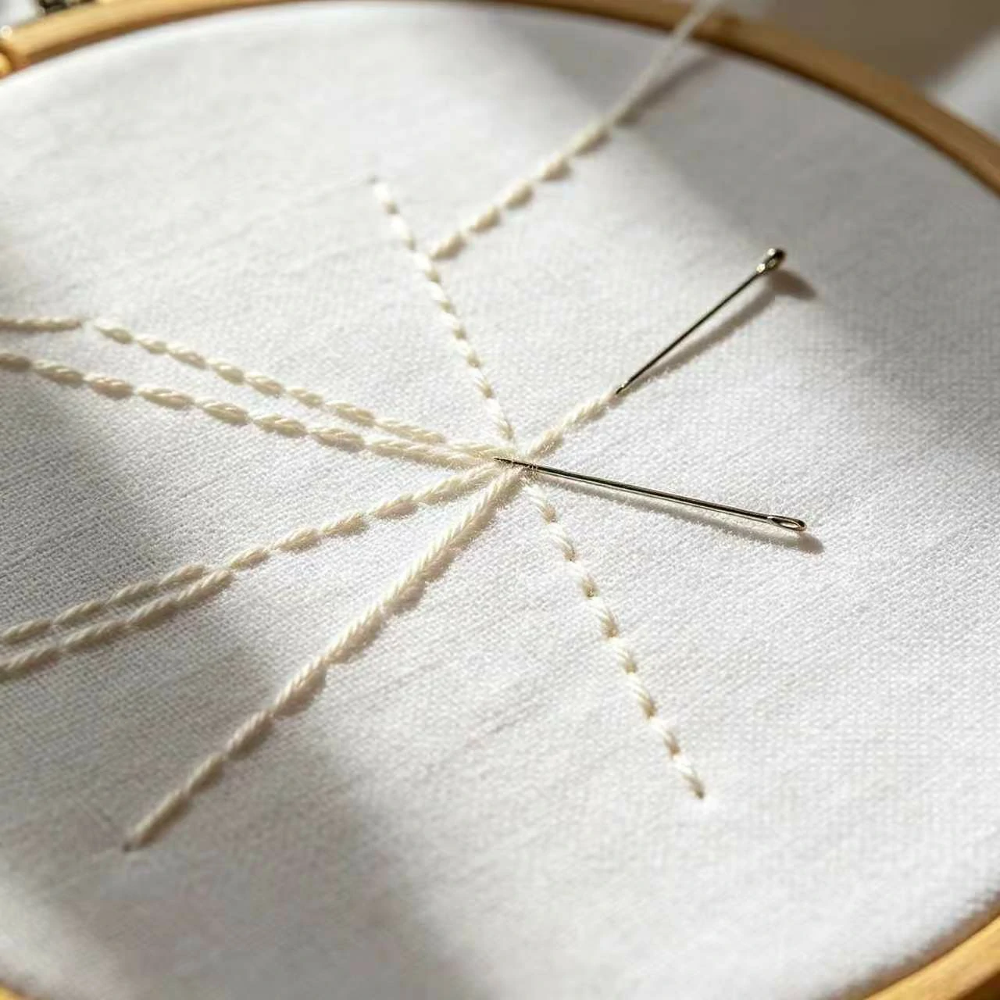

Incense
The Way of Fragrance
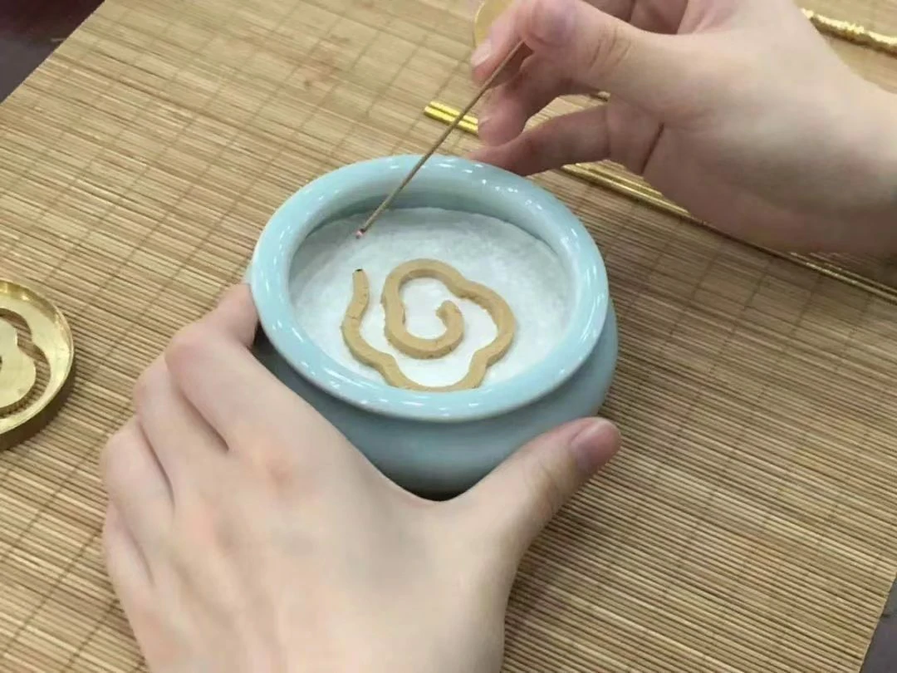
Jewelry
Tang Adornments

Makeup
Tang Cosmetics
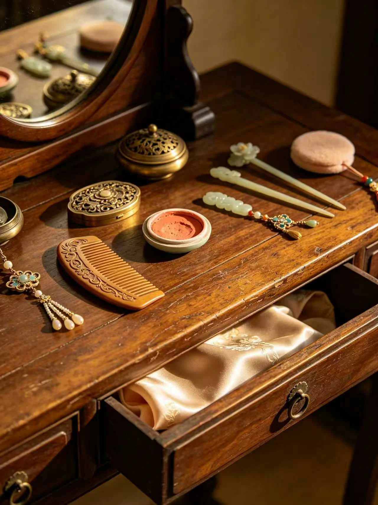
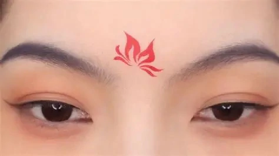
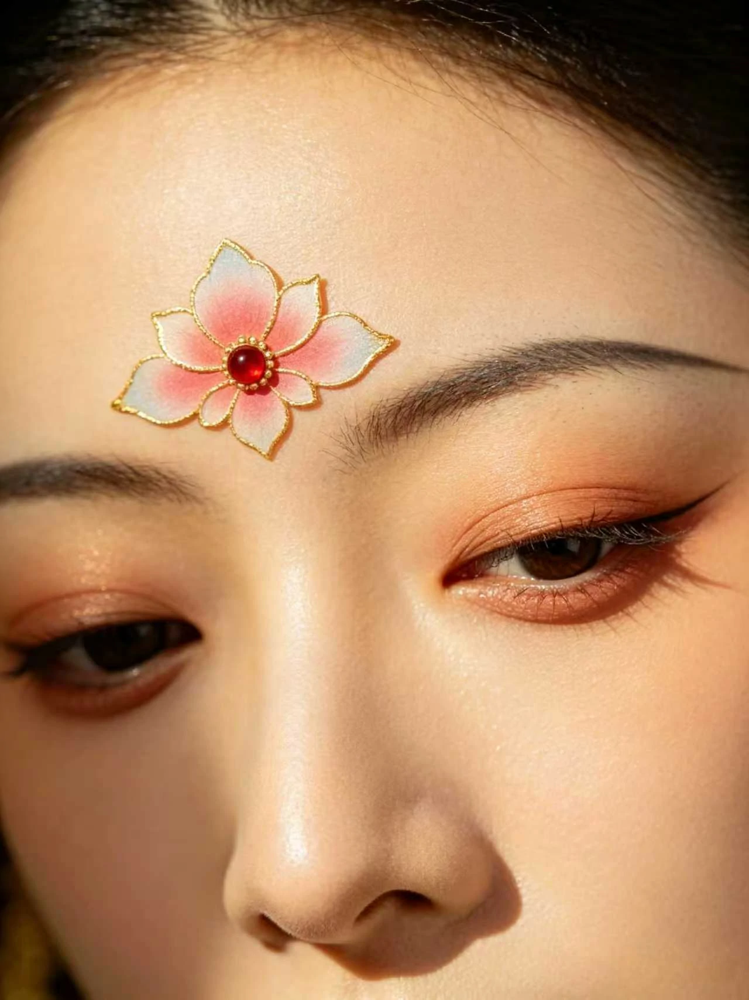
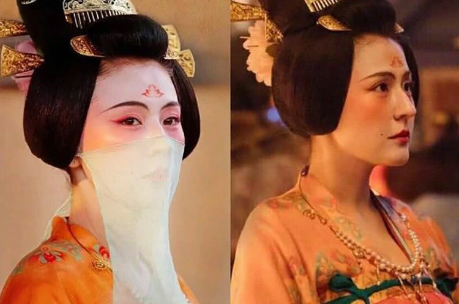
Papercut
Paper Silhouette

Silk
The Silk Road Legacy
Future
Toward Tomorrow
Culture never ends. It simply finds new forms to grow.
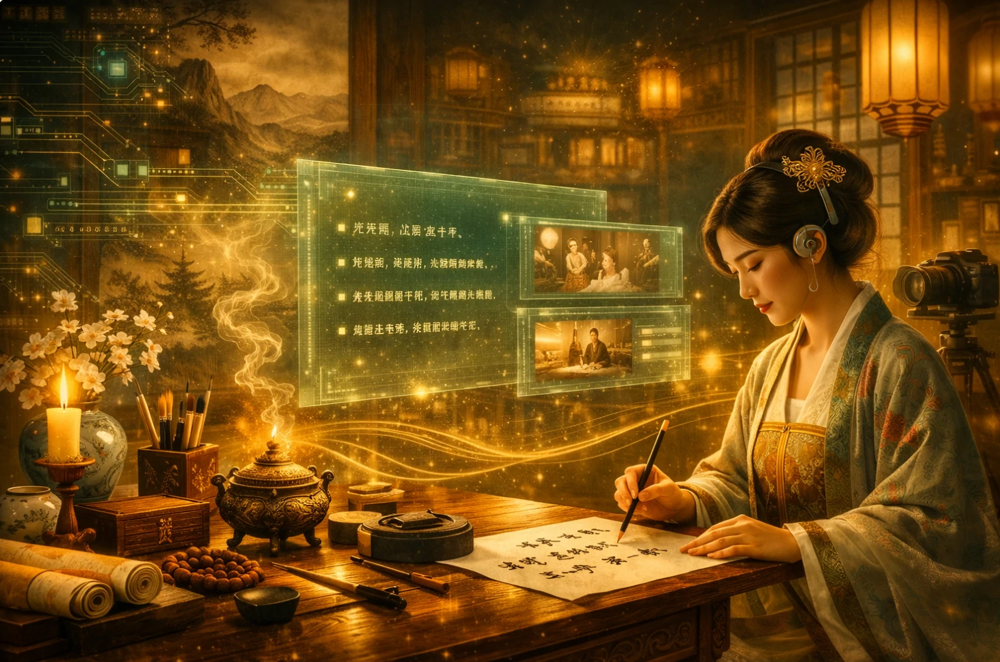
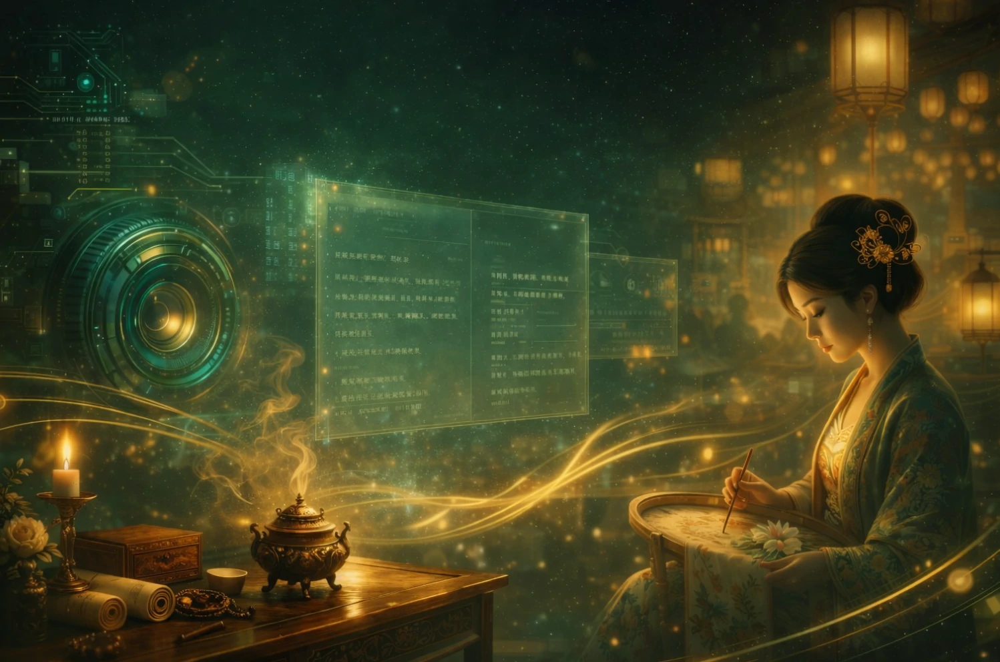
From the Tang Dynasty to today — thirteen hundred years. From today to tomorrow — perhaps in the digital world, Tang Shu will become a new gateway into cultural discovery. Artifacts once confined to museum glass cases, craft techniques preserved only in academic papers, stories fading on yellowed scrolls — all are being reactivated within the digital realm.
We believe technology can go beyond efficiency and convenience. When AI learns to comprehend the aesthetic logic of the Tang, when digital imagery can restore the stitches and hues of a thousand years ago, when every person can reach through a screen and touch that luminous history — cultural inheritance is no longer the mission of a few, but a feast shared by all.
This is not a replica of the past, but an imagination of the future. Tang Shu stands at the crossroads of tradition and technology, seeking to answer an ancient yet ever-new question: when millennial culture meets the digital age, what possibilities will emerge? The answer is still being written.